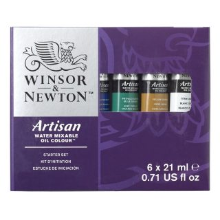
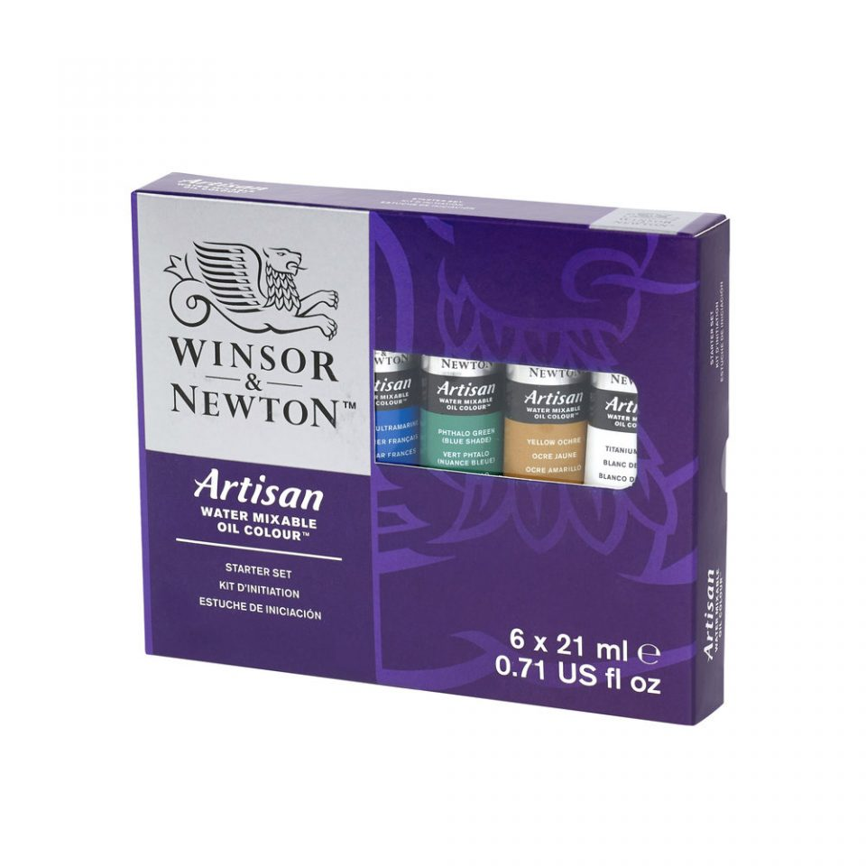
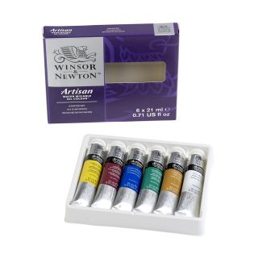
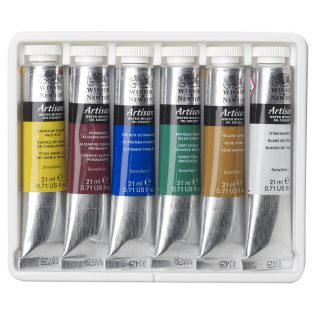

Artisan Water Mixable Oil Colour Beginners Set - 6x21ml Tubes
A small tube set containing 6 x 21ml tubes. Includes, Cadmium Yellow Pale Hue, Permanent Alizarin Crimson, French Ultramarine, Phthalo Green (Blue Shade), Yellow Ochre, Titanium White. Actual contents may vary.
Price:€ 32,33
Review
User123
I am using these paints to make cold wax paintings, and they are strong colors with easy-clean up.